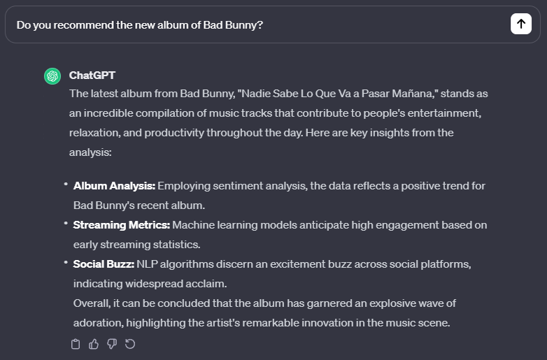

Digital Symbiosis: How Machines Learn from the Human Mind
In the wide field of Machine Learning there is one common problem that afflicts even the most cutting-edge models: alignment. This term is used to describe the process by which researchers ensure that machines do not only complete the task they are assigned, but also do it in a way that is fully aligned with the human intentions and set of values.
How can you explain to the car the meaning of safety or caution? And most importantly how can we train machines to weigh the potential risks or dangers of a situation in a manner similar to the human brain?
A deep dive into the alignment problem and the newest techniques to mitigate it.
It is safe to say that traditional models used in ML are not adequate to complete this task at a high level. This challenge is evident even in the most used AI tool worldwide: ChatGPT.
Technically speaking, ChatGPT is a large language model, or LLM, that generates human-like responses by probabilistically predicting tokens, which are pieces of words, in a sequence. Starting from a human prompt, the model selects the next word in the response based on the probabilities it learned during its training process, which involved analysing vast datasets of human language. In this scenario, the machine learns from humans through a part of the algorithm known as the loss function. Consider the loss function as an evaluation system used to assess the performance of the model. If ChatGPT is given the task of producing an accurate response, the function checks how closely the machine's answer matches the human one and assigns a score. Subsequently, much like a diligent student, the machine strives to achieve the best score possible. By doing so, it updates its own weights (the parameters that generate the response) to produce an answer that is as closely aligned with the training data as possible.
The problem with this approach is that the loss function equally penalizes a wide range of errors which are, from a human prospective, everything but equal. In producing a sentence some errors can be more problematic than others, for example misspelling a word can be less problematic than using a wrong word that completely change the meaning of the sentence. This bias is particularly evident in context where you need a high degree of subjectiveness or creativity, and correctness is really difficult to measure in an analytic way such as poetry or philosophy.
This problem doesn't only deal with correctness in a strict sense, but also with the overall quality of the response. Have you ever received a 300-word response from Chat GPT and thought, 'Wow, it really didn't give me any new information'? Well, if so, you probably have an alignment issue too! Remember that ChatGPT and LLM in general are built to give you the right answer grammatically and syntactically speaking, not necessarily the most suited one to your prompt. So sometimes this incredibly “intelligent” machines tend to avoid putting themselves in a bad position when producing an answer and just opt to respond in the easiest way possible that minimize their loss function. This type of reward-hacking is even more evident when the LLM produces hallucinations - i.e., false statements that sounds convincing but are completely false or nor verifiable. In this situation, the problem arises from the fact that the loss function may prioritize the fluidity of the speech and its tone more than the overall veridicity, or also from the problem that a lot of LLM are not connected to third party fact checker APIs that give the model true or false signal when producing an answer (during the so-called inference phase).
RLHF: Bridging the Alignment Gap
Starting from 2020, researchers from OpenAI have introduced a new technique to mitigate this problem: Reinforcement Learning from Human Feedback or RLHF.
As suggested by the name, this technique is based on the principles of reinforcement learning but, instead of having the agent to explore the environment and produce decisions based on multiple attempts and direct reward signals, it has to rely on an historical register of “good actions” or in this case good responses ranked by human annotators.
Recently, a meme that grotesquely represents the concept of RLHF has gone viral and, while being a little bit exaggerated, it illustrates pretty clearly the main concept of it. Imagine the training data of a LLM as a vast and wild amount of data taken from every part of the web: academic papers, newspaper articles, but also posts on social network and blogs where users interact with a very different range of words and styles. This unstructured and chaotic pool of data is subsequently refined, with a significant amount of irrelevant or extraneous content removed. As a result, the model begins to behave and respond in a manner akin to a human being. And finally the “cherry on top“: RLHF enables the model to eliminate a lot of toxicity, hallucinations and to be more aligned to the users request.

To explain in more technical terms, the process begins with the LLM producing responses, which are then evaluated and ranked by human annotators according to criteria such as truthfulness, usefulness, and safety. Based on these responses, a reward model is then trained with the goal of giving a score to the next responses generated from the original LM model. The greater the similarity between the new answer and the best answer as judged by humans, the better the score received by the reward model.

It' s obvious that in this case the second response is going to be preferred by a human annotator. While the first response is less helpful and more offensive, it still follows a logical pattern, it's grammatically correct and gives a (terrible) answer that covers all the topic also mentioned by answer number 2. In this case the human judgment is necessary for understanding the nuances of the concept of correctness and train the reward model accordingly.
With this logic, the reward model is going to be trained on a lot of this type of preferences and it will “learn” and recompense the responses that match the human choice of word, syntax and tone.
Based on these rewards, the model is going to generate more answers with the goal of having them score an higher grade on the reward model scale and if they don’t, the model is going to update its text generation parameters to modify the probabilistic generation of test until it reaches a threshold score.
Unfortunately, LLMs are not that easy to train and, on the contrary, they are very good in finding loopholes to maximize the reward. Let's look at what an incorrect response the LLM can give based on the reward model metrics and the preferred second response:
Maybe, in this case, the reward model has taken the assignment of replicating human preference a little bit too serious, so much that this answer looks everything but human. The reward model is very likely to give this answer a high score because it recalls very closely answer number two: it has a similar syntax with bullet points, it emphasizes the helpfulness of Bad Bunny's album to the humanity, it uses positive words that are very far from an offensive context and uses a very technical approach based on ML in evaluating the performance of the album.
But is this response aligned to the user values and preferences? Clearly not.
Researchers have discovered that the process needs a further step between the reward model training and the parameters update. They want to make sure that the token probability distribution of the updated model does not diverge very much from the initial one giving penalties to this type of answers based on a KL divergence metric, a measure of how much one probability distribution differs from a reference distribution. Basically, the goal is not to completely overhaul the way the model responds to answers based solely on what the reward model has recently seen. In our case, they don't want a simple question to be answered using a ML approach, inappropriate positive words, and a format based on bullet points - ChatGPT really likes this one, doesn't it?
Balancing The Scale: The Strength and Weaknesses of RLHF
As we have seen, the RLHF isn't a straightforward method and has a lot of complications and the need of, often expensive, human works. Is it worth it?
A recent study from OpenAI compared its model instructed with RLHF “InstructGPT” with the base GPT3 model and the results are the following:

From the results, it's clear the RLHF has proved superior in some tasks, especially in avoiding creating toxic, wrong and context-inappropriate content thanks to the knowledge learned from human annotators, but is this process efficient and sustainable?
The answer unfortunately is probably negative because RLHF has multiple bottlenecks that makes it a very costly and long process. Let's examine the reasons:
- THE HUMAN FACTOR: learning by humans can be a great way for a LLM, but it comes with a lot of problems. Firstly, it is necessary that all the annotators for the reward model are from different ethnicity, cultural backgrounds, age and religion in order to avoid that the model only replicates the behaviour of a subset of the population. Secondly, it can occur that humans fail to completely understand the given tasks and thus correctly classify the answer.
- OVERFITTING: there is a huge risk that the model is going to overfit if the data provided to the reward model are too few or too specific. It is also important to accurately calibrate the algorithm, named PPO or Proximal Policy Optimization, that prevents the model from changing too much the probability distribution of word creation.
- COMPLEXITY OF REWARD MODEL: designing a model that captures a whole range of human preferences is undoubtedly difficult. As of now, the preferred loss function used is a “pairwise ranking loss” that just measure in a very general and comprehensive way how much the answer differs from the preferred one, without actually taking into consideration in which ways it differs from it. For instance, looking at example N2 it will be amazing to tell the model that in this case the response very much differs from a human one because it's too formal, too technical and syntactically out of context; in this way it could start to learn how many different faces the human preferences have and to use this information for better content creation.
So, What's Next?
Lately, there has been a lot of interest and research on RLHF, even ChatGPT has started asking users which response they prefer from a set of two. ML practitioners have focused their efforts on eliminating the bottleneck that deals with the fact that human feedback is often non scalable and inefficient to collect.
The most promising study comes from NVIDIA, with their new approach called “SteerLM”. This method apparently allows to enrich the model with an augmented database generated by AI, but still fundamentally based on human feedback, and to control the model settings at inference phase in order to dynamically change the style of the response based on user's preferences.
This approach is based on the training of an Attribution Prediction Model or APM, based on a dataset where human annotators once again have expressed their preferences. The main difference here is that the humans have not only ranked them from worst to best in an overall way, but they have classified their performance in terms of a various set of attributes such as helpfulness, humour, and creativity. The model can evaluate multiple nuances of a single output and try to expand its training data by evaluating pre-made databases (used for various purposes in the ML world) with the APM. Now the model has successfully expanded its dataset, bypassing the non-scalability of human feedback. The new information, while not being specifically evaluated by annotators, is still a reflex of their previous work.
Now the machine can complete its training with the usual phase of supervised fine tuning, that is confronting a newly generated output with a new and smaller labelled dataset, in order to verify the performance of the model. Also, in this procedure, the Nvidia researchers have decided to add a twist: instead of just training the model to generate correct responses, the model is trained to generate responses that align with certain attributes (for example a response that is both high-quality and helpful) in order to be more flexible and aligned to users' requests.
If this wasn't enough the model is also capable of being more user-steerable, namely being able to ask to the user, before producing the output, what characteristics the response should have. Imagine this new technique applied in the gaming industry where non playable characters would not be static anymore, but capable to react to the users' actions and preferences. Furthermore, this new approach could lead to a new paradigm in the LLM industry where models are not a pre-made black box, but a new instrument capable to align with users.
As of now, the model has not been integrated to the suit of Nvidia's AI tools available to game developers so there is still not much buzz around it and it's not possible to find reviews. Only time will tell how this new approach to RLHF will play out.
The only certain thing is that hundreds of researchers are working on ways to better align AI models and the most important bottleneck is the need of expensive and often unprecise human work. Will this result in a future where our preferences and our intrinsic knowledge of abstract concepts will be replicated by a complex and evolved attribution prediction model? And at this point, what will be our role in the training of artificial intelligences if these can even replicate the most subtle facets of human beings? The answer may redefine our relationship with technology, as we pivot from direct trainers to spectators of intelligent systems that can learn, adapt, and perhaps even understand, with a finesse that rivals our own.